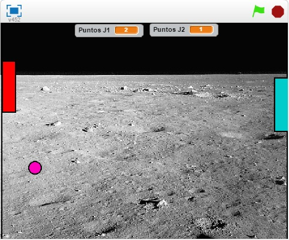

Con esta herramienta se empezo el curso de "Herramientas de Desarrollo de Software" con la cual pudimos crear nuestro primer videojuego y empezar a entrar al mundo de la programacion, pero esta ultima era un poco mas facil ya que se trataba de programacion grafica con ayuda de bloques
Caracterizticas del trabajo
- Facil de utilizar
- Es una manera muy interactiva de aprender programacion
- Una herramienta muy dinamica
